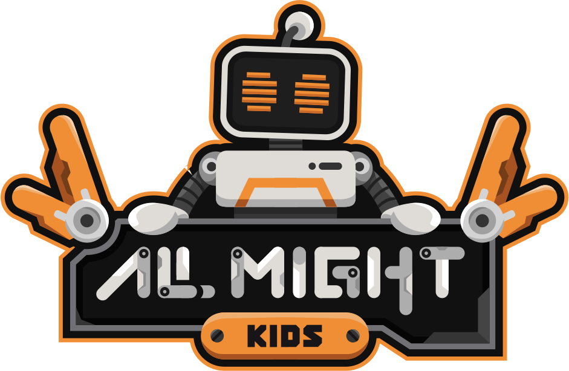

🤖 WRO 2026 · Future Innovators · Elementary
🤖 WRO 2026 · Future Innovators · Elementary
RITMO
"Every heartbeat, a story."
The cultural vending machine that uses heart rhythm to deliver cordel literature — in paper, verse, and woodcut print.
ALL MIGHT KIDS · Escola SESI SENAI Parangaba · Fortaleza, CE
